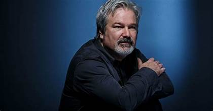

Gore Verbinski

Gregor Justin "Gore" Verbinski (born March 16, 1964) is an American film director, screenwriter, and producer. He is best known for directing Mouse Hunt, The Ring, the first three Pirates of the Caribbean films, and Rango. For his work on Rango, Verbinski won both the Academy Award and BAFTA Award for Best Animated Film. Verbinski was born in Oak Ridge, Tennessee, the fourth of five children of Laurette Ann (née McGovern) and Victor Vincent Verbinski, a nuclear physicist. His father was of Polish descent. He attended La Jolla High School before enrolling at the University of California, Los Angeles (UCLA), where he earned a Bachelor of Arts degree in cinematography. In his youth, Verbinski was passionate about music and played in several punk rock bands, which influenced his creative approach.